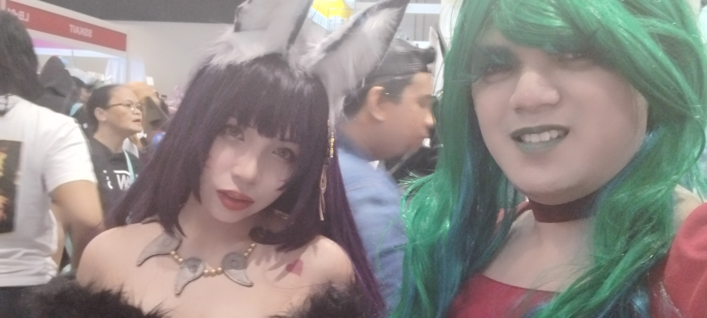
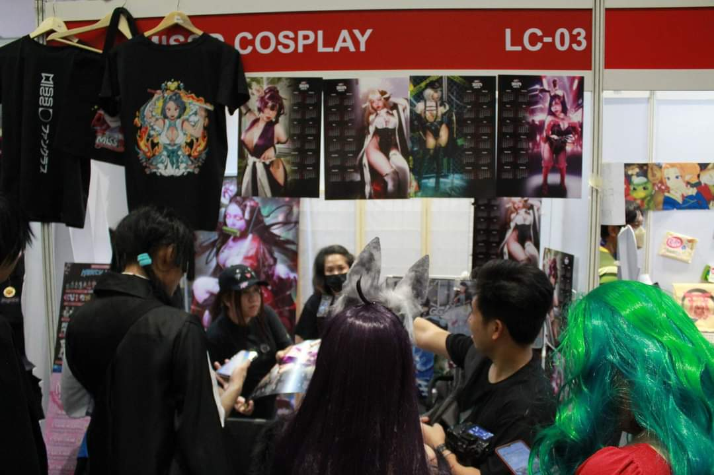
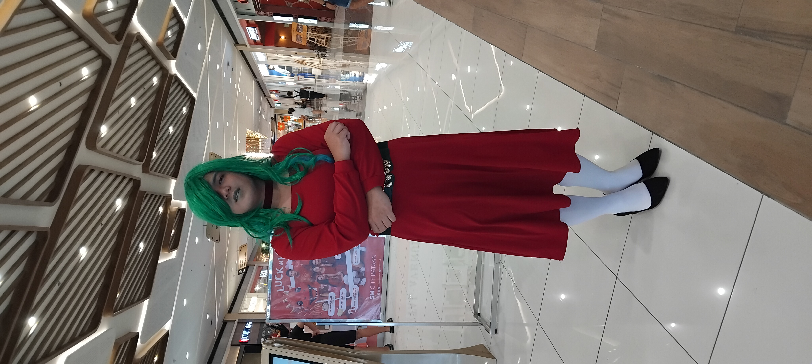

smol update -- I've collected some of the cosplay shots since my first cosplay that I decided to share with you all!! click the button below to see the collection -- sorted into different dates where I took em~
so, for whatever reason I forgor to give you guys an update regarding my first-ever #AgaCosplay at SMX Convention Center in Manila last 30 Dec 2023, and what happend on the first "#AgaCosplay Invades" last 11 Feb. my deepest apologies.😅
 — the first time I met missdcosplay during my debut as a cosplayer. taken 30 Dec 2023
this is my first time being in a cosplay convention and being a cosplayer at the same time!! prepping for this event is not easy as I need to get my hands on my necessities fast before I could rip through the deadlines.
let's take a look at how we got there:
I once got a tip from some of my close fwens on socials that they're gearing for their spot at Cosplay Matsuri, which was entirely new to my ears at the time. but knowing that this is a big opportunity for me made me realize that I need to get my hands on it so that the future looks bright!!
originally, I wanted to set out for CONQuest; but due to many factors leading up to long queue lines (this was covered in the news) made me rethink abt what to expect from a convention in general. but hearing that Matsuri will be a long mile away from its intended start date made me convinced this is the best way to start debuting as a cosplayer -- no matter how bad I look (lmao).
during my first round of purchasing cosplay materials, I was dead set on making sure that the materials were as close as the original.
one of em was the long-sleeved, squareneck dress I bought from Shopee -- which somehow adheres to the same aesthetic but I think this might look like the vroid model I currently have. nevertheless, I posted the pic on X:
one of the BIGGEST #AgaCosplay updates ever published
— 💚🍃Aga-chuu💗🌸 VWriter (@thebelovedmoon) October 26, 2023
the dream dress has finally arrived!! might see if it fits perfectly (cuz it's XL), but rn I'm celebrating victory wooo🙌
pic.twitter.com/SkRuKKp0mD
I tried the outfit myself, and I can confirm it fits perfectly!! there were some creases, but that didn't matter since it's fitting for such an occasion!!
I've also bought off other items from the list which was fitting at the time (until I put em on before checking out the convention), and documented em here on X. but for anyone who's wondering what items I bought (in order):
alongside those items, I initially was planning on buying the 3-day pass to make things convenient; but I missed the window so I bought all individual passes instead. it doesn't cost much as the 3-day passes but I kinda miss the goodies that was on there. might save some up again for this year tho.
SM #MOA!! expected ETA for the arrival is around 1pm PHT, so see you all at #CosplayMatsuri2023~💚🍃💗🌸
— 💚🍃Aga-chuu💗🌸 VWriter (@thebelovedmoon) December 30, 2023
#AgaChuu #AgaCosplay #AgaIRL
pic.twitter.com/NsbmeL5r7S
well, I mean, this is it!! sure I missed previous two days but having to step foot on this complex is beyond my imagination!! been a while since I got out town to extreme extents, so this feels like a breath of fresh air!!
anyhow, I got some help trying to set up make-up and everything; and since it's my first time wearing contact lenses, it feels a bit itchy at first. but anyhow, after I get to wear everything I pushed forward for SMX Convention Center, and.. you know the rest.
got around to any booths, took some pictures, and even got to a first meet-and-greet provided by our peeps over at VOLs!! Minazuki Mana, one of their talents, was currently holding her leg of the event so it's nice to see that I get to chat with her for the first time!!
finally got the chance to meet and greet her!! I don't have my eyelashes anymore but it sure was fun nonetheless~💚🍃💗🌸
— 💚🍃Aga-chuu💗🌸 VWriter (@thebelovedmoon) December 30, 2023
#AgaChuu #AgaCosplay #AgaIRL #CosplayMatsuri2023
pic.twitter.com/gQFxxZcFdQ
but the most significant of them all was obv meeting up with missdcosplay for the first time!! I dunno how many times I swung by her booth, but all I know is she seems pretty chill and easy to talk to!!
I also took some pictures involving other cosplayers (most of em were representing mama Yor) and I got some goodies along the way!! I might update this blog to include a googledrive containing these pictures sometime~
 — the last highlight from missdcosplay's experience. posted 31 Dec 2023
after such an exhausting but fun day, I posted the following selfies I took on X (and other socials) as seen here:
to all the cosplayers, vtubers, and everyone I've interacted during my debut as a cosplayer, I would like to formally thank you for all the memories that we all shared during the event!!
— 💚🍃Aga-chuu💗🌸 VWriter (@thebelovedmoon) December 30, 2023
full blogpost to be released tmr.💚🍃💗🌸
#AgaChuu #AgaCosplay #AgaIRL #CosplayMatsuri2023
pic.twitter.com/k8FVeQSvZq
 — one of the three total photoshoots I took. taken 11 Feb 2024
#AgaCosplay ALERT: the First Maria is invading #SMCityBataan for the first time on 11 Feb!! for those who are eager to see me in person, hope to see you there!! ehehe💚🍃💗🌸
— 💚🍃Aga-chuu💗🌸 VWriter (@thebelovedmoon) February 10, 2024
#AgaChuu #VTuber #VTuberUprising
#VTresMarias🍃🪷🌸#V三人のマリア
pic.twitter.com/5N9EHsnH4D
back in my temp hometown -- Bataan (Region III, PH), SM City Bataan was my one-stop shop for all my leisure needs and whatnot. somehow this takes me back -- I began visiting the mall when it first opened on 19 May 2023. I hadn't stayed enough back then to see the cosplayers, but I got a tip from a relative of some neighbor that they usually come around every Sun.
and yes, I realized that AFTER I made the debut as a cosplayer (see "what happend over at Cosplay Matsuri 2023") -- so I had to prep for this moment and wait for a particular timing.
somehow, I got some training on hand just to get used to things, and it happens that one of the training session days was aligned with the cosplay day I planned -- 11 Feb.
so I had no time to waste -- washed my clothes and prep them for my first-ever showcase.
I got some fwens over at a Samsung Store at 2nd Flr. above Gate 1, at SM Cyberzone. I recently stayed there to have this illust done which went pretty well.
I talked to em abt this venture and they decided to help out -- shoutouts to em for a welcoming experience!! even tho I didn't go there to buy stuff, just being able to mingle with em increased my morale and expectancy to visit more often. (if anything, it was a lot better than the neighboring Power Mac Center where any test you do to an Apple device can get the security guards up your a**. tf, Tim Apple??!)
anyhow, once that is done, some mall-goers took notice of how I look, cuz when I usually cosplay as a fem I always intend on keeping it that way. so the way I walk and interact with people had to be taken into account.
I actually took a selfie of myself, with another two being taken by a female security guard on patrol. she seems nice, I can tell you that.
but anyway, some of the onlookers invited me to take pictures with em, which is a bit overwhelming but fun. and of course, I had a chance to visit other parts of the mall as I go along, greeting every salespeople in the process.
.. altho I'm confused by the time I had to switch places, cuz since I cosplay as a fem, other people interpreted me as such. buuuuut I guess it's kinda alright, since I'm leaning into that gender personally. Idk why, but I feel like being a fem feels nice considering that part of me wants to continue doing cosplays in this formfactor.
I left SM Bataan after 2 fulfilling hours, and I felt satisfied with the results. somehow I forgor to post the conclusion, so I had to put this in a blogpost to make up for it.
I was actually thinking, since Cosplay Matsuri will be my grand appearance on an annual basis, I had to prolly save more to be able to cosplay more characters. here's some that I had planned:
also, "#AgaCosplay Invades" might continue as we go along, just with an okaasan look for now. I might be thinking, since Bataan will be the first point, I might travel around the province in this form factor and see what people think.
but hey, it's nice to be able to cosplay again after the debut, and here's hoping for more sessions to come!!
(I have to admit, being in a bridal outfit sounds nice, I already have one in cart lmao)
published